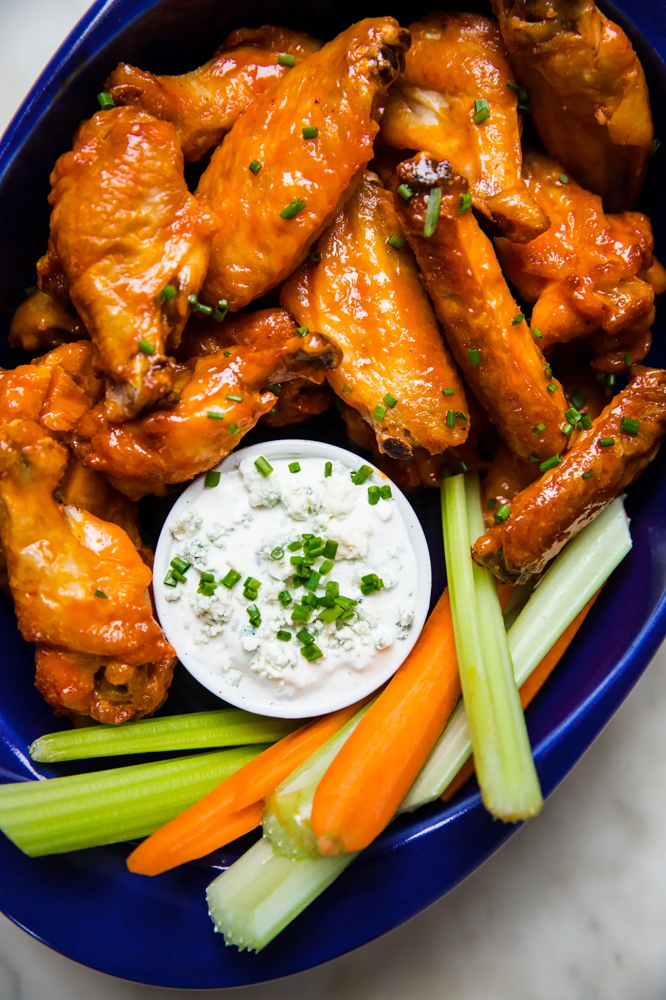

Buffalo Chicken Wings

Description
Bacon-y, cheesy and perfect for topping with all of the Tex-Mex things, these breakfast quesadillas
are our new AM favorite. Plus, they’re just about as easy to make for a crowd as for one or two,
so you might as well make it a party! One of our favorite things about this breakfast quesadilla recipe
is that it uses just one pan. Yep, breakfast for a big crew that only uses one, single pan. What more
could a person wish for!? The quesadillas are full of everything you love about breakfast—eggs,
cheese, bacon—and they’re just so easy to make. And if you’ve got a vegetarian in the mix, it’s
easy to make one or two quesadillas sans bacon—no biggie—so it’s super adaptable, too.
Ingredients
Chicken Wings
- 1 Tbsp kosher salt
- 2 tsp garlic powder
- 2 tsp paprika
- 4 lbs chicken wings/drumettes
- 2 egg whites, beaten until frothy
Buffalo Sauce
- 1/2 cup hot sauce (Frank's Red Hot or Louisiana Wing Sauce)
- 4 Tbsp salted butter
- 1 tsp honey
- blue cheese dressing
- celery sticks, for serving
Steps
- Preheat the oven to 450F
- In a large bowl, mix together the salt, garlic powder and paprika. Toss the chicken wings
with the seasonings until they’re fully coated. Pour the frothy egg whites over the
seasoned chicken pieces and toss until each wing is fully coated.
- Prepare a large rimmed baking sheet by lining it with foil. Set a metal cooling rack on
top of the lined baking sheet. Arrange the chicken wings, skin side up, on the cooling rack.
- Reduce the oven temperature to 425°F. Bake the wings for 45-50 minutes, until the chicken
wings are a deep golden-brown color and the skin is nice and crispy.
- While the chicken wings are baking, make the homemade Buffalo wing sauce: In a small
saucepan over medium high heat, whisk together the hot sauce and the honey. Bring to a
simmer before stirring in the butter. Cook until the butter has melted. Remove the sauce
from the heat.
- Transfer the baked chicken wings to a bowl. Pour in the Buffalo sauce and gently toss
the baked wings in the sauce until they are fully coated.
- Serve immediately with blue cheese dressing and celery sticks on the side.